Study all 27 original figures, then use the practical quiz to test what you can identify without labels. Multi-panel figures are kept together. Open a figure’s notes after trying to name the finding.
Muscle biopsy and inflammatory myopathy
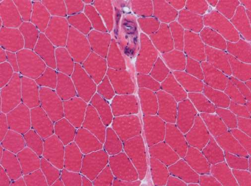
Reveal diagnosis and key features
Normal skeletal muscle
Uniform polygonal fibres in cross-section, peripheral nuclei, thin endomysium between fibres.
Slide annotations: The handwritten blood-supply label points toward a vessel; the endomysium is the delicate connective tissue between individual fibres.
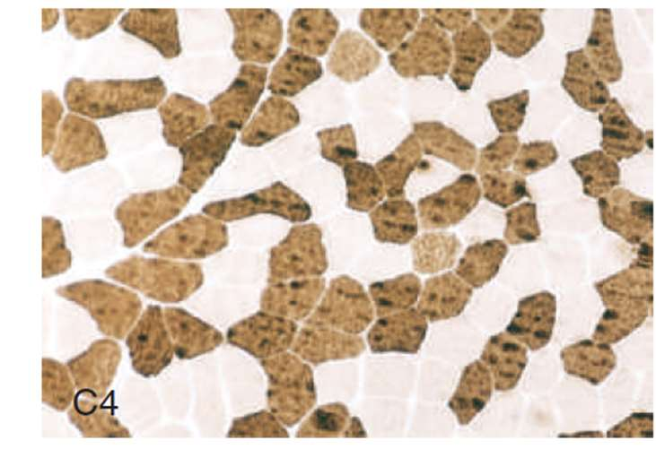
Reveal diagnosis and key features
Muscle fibre types
A checkerboard of intermixed fibre types on adenosine triphosphatase (ATPase) histochemistry.
Slide annotations: The incubation pH controls the contrast: alkaline, type I pale and type II dark; acid conditions shown in the notes, type I dark and type II pale. Darkness alone cannot identify the type without the stain conditions.
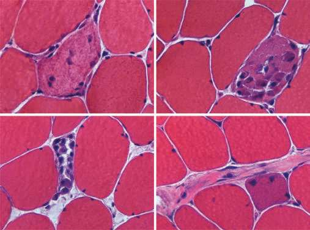
Reveal diagnosis and key features
Segmental necrosis and regeneration
Panels A–C show segmental myofibre injury with inflammatory cells; D shows a regenerating fibre.
Slide annotations: Injury can affect one segment while another segment of the same fibre remains intact. The marked internal nucleus, basophilic cytoplasm and conspicuous nucleolus support regeneration. Basophilia reflects increased ribonucleic acid (RNA) and ribosomes.
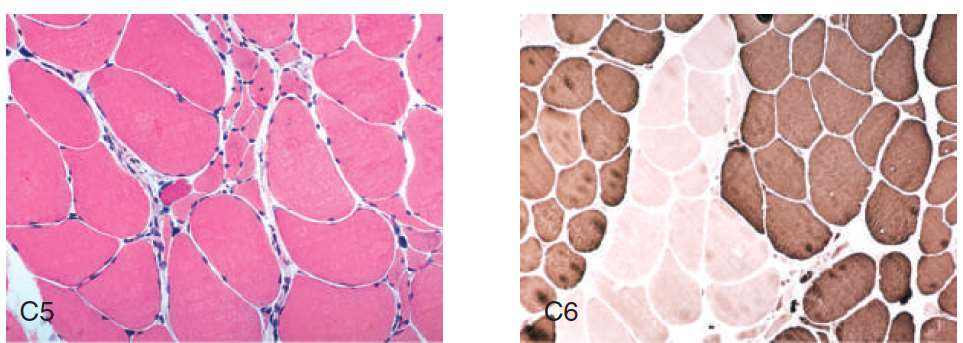
Reveal diagnosis and key features
Denervation and reinnervation
Left: clustered small angular fibres (grouped atrophy). Right: contiguous same-type fibres (fibre-type grouping).
Slide annotations: The notes flag the motor neuron, axon and neuromuscular junction (NMJ) as levels of motor-unit dysfunction. Grouped angular atrophy and loss of the ATPase checkerboard favour neurogenic change. Fibre-type grouping reflects collateral reinnervation; a junction disorder need not produce this pattern.
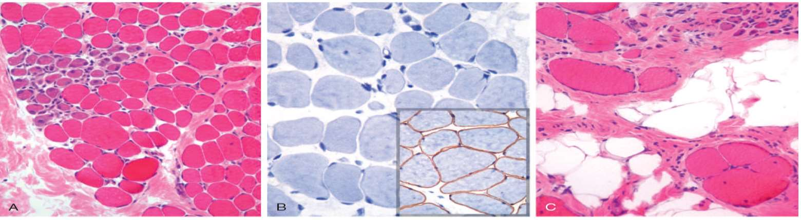
Reveal diagnosis and key features
Duchenne and Becker muscular dystrophy
A: variable size, basophilic regeneration (arrow), early endomysial fibrosis. B: absent membrane dystrophin in the illustrated Duchenne specimen; normal brown membrane stain in the inset. C: marked size variation, fat and fibrosis.
Slide annotations: Immunohistochemistry (IHC) highlights membrane dystrophin. Duchenne muscular dystrophy (DMD) usually has absent or near-absent dystrophin; Becker muscular dystrophy (BMD) usually has reduced, patchy or abnormal staining, depending on antibody and variant. The circled adipocyte shows fatty replacement; fat and fibrosis explain calf pseudohypertrophy.
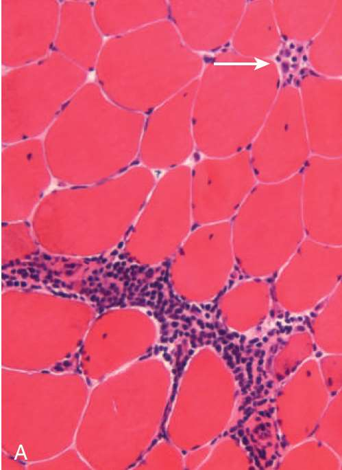
Reveal diagnosis and key features
Polymyositis
Endomysial inflammation and injured myofibres. Look between individual fibres rather than around fascicles.
Slide annotations: The handwritten arrows highlight an inflammatory myopathy and cluster of differentiation 8–positive (CD8+) cytotoxic T cells. The classic pattern includes invasion of non-necrotic fibres. This pattern supports the teaching diagnosis but is not by itself specific for polymyositis.
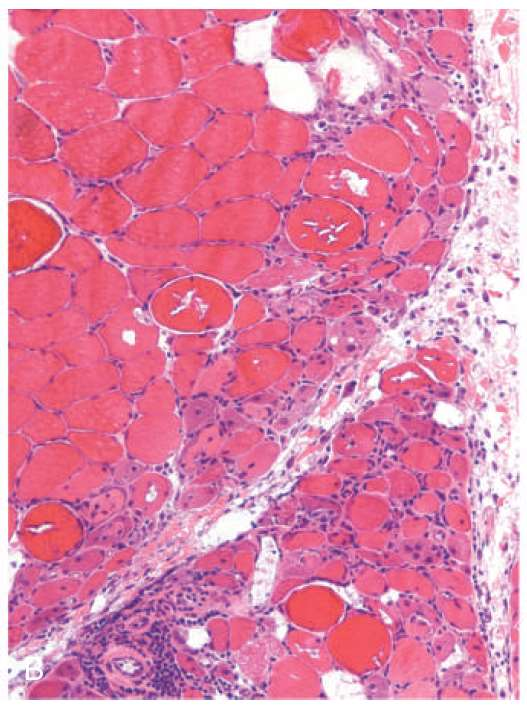
Reveal diagnosis and key features
Dermatomyositis: muscle biopsy
Perivascular mononuclear inflammation and perifascicular/paraseptal atrophy: small fibres at the edge of a fascicle or next to a septum.
Slide annotations: The notes mark inflammation around vessels, cluster of differentiation 4–positive (CD4+) cells, plasma cells and serum autoantibodies. Plasma cells and lymphocyte composition vary, and autoantibodies can support the diagnosis without being universal.
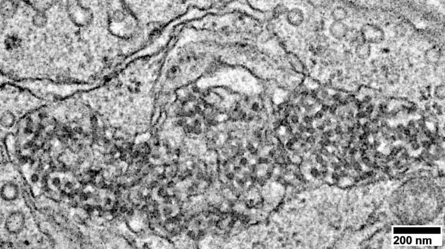
Reveal diagnosis and key features
Dermatomyositis: endothelial inclusions
The circled region on electron microscopy shows tubuloreticular inclusions in an endothelial cell.
Slide annotations: The margin note points to autoimmunity. These inclusions are associated with interferon signalling and can support dermatomyositis, but are not unique to it.
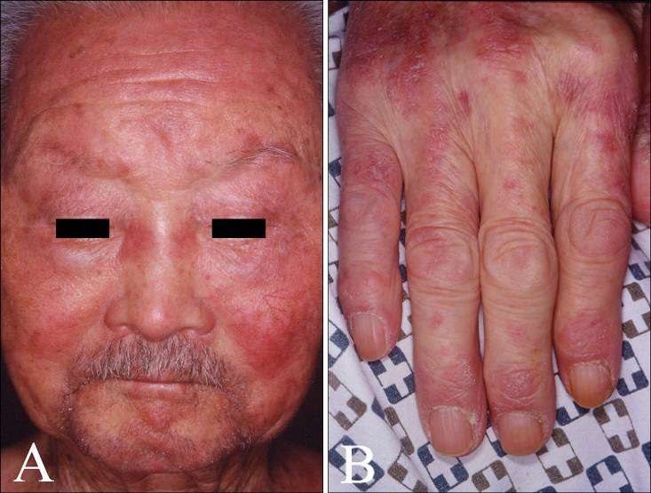
Reveal diagnosis and key features
Dermatomyositis: skin signs
A: heliotrope rash, violaceous periorbital erythema. B: Gottron papules, flat-topped erythematous or violaceous papules over extensor finger joints.
Slide annotations: The note emphasizes the diagnostic value of these cutaneous clues in an inflammatory myopathy. They strongly favour dermatomyositis in this comparison.
Bone structure and remodelling
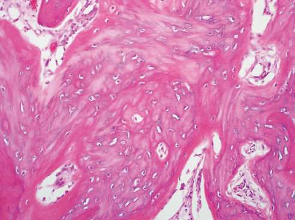
Reveal diagnosis and key features
Woven bone
Haphazard collagen and relatively many osteocytes in lacunae; rapidly deposited, mechanically less organized.
Slide annotations: The notes call out rapid formation, high cellularity and lower mechanical organization. Woven bone can be normal in development or early fracture repair; persistence in other settings may be pathological.
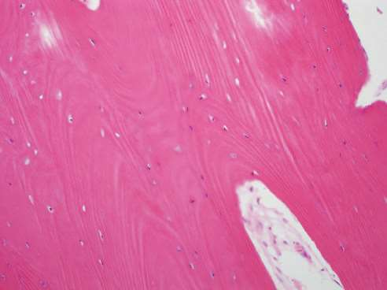
Reveal diagnosis and key features
Lamellar bone
Orderly parallel lamellae in this field, with mature architecture.
Slide annotations: The handwritten label points to organized collagen. Lamellae contain predominantly type I collagen arranged in ordered layers; fibre directions can differ between layers.
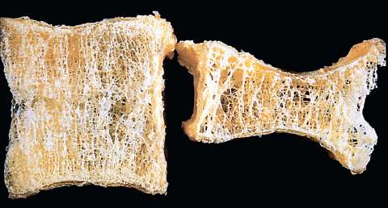
Reveal diagnosis and key features
Osteoporosis: vertebral body
Normal vertebra on the left; compressed osteoporotic body on the right with loss of horizontal trabeculae and prominent remaining vertical struts.
Slide annotations: The note highlights reduced bone density. Vertical struts can appear relatively thick or conspicuous; that does not mean the overall bone mass increased.
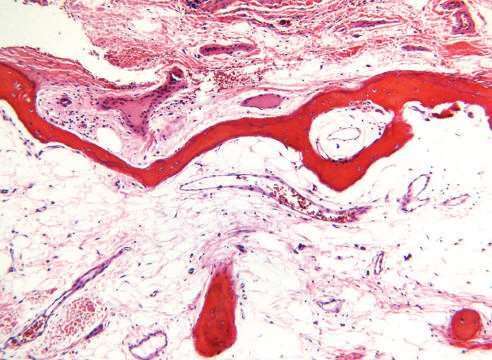
Reveal diagnosis and key features
Osteoporosis: histology
Thin cortical bone at the top and sparse, thinned trabeculae below. The remaining matrix is normally mineralized.
Slide annotations: The annotations point to osteocytes and marrow adipocytes. Marrow fat is visible; the diagnostic finding is less bone, not adipocyte infiltration. Contrast osteomalacia, which involves defective mineralization.
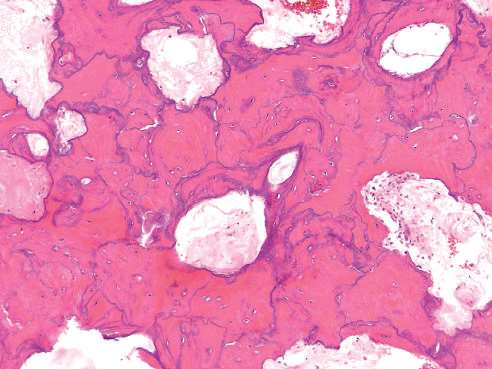
Reveal diagnosis and key features
Paget disease: sclerotic phase
Irregular thick cement lines divide randomly oriented lamellar bone into a mosaic.
Slide annotations: The handwriting marks the cement lines and calls this the third, sclerotic phase with excess bone deposition. Remember lytic → mixed → sclerotic; abundant bone can still be disorganized and mechanically weak.
Degenerative and inflammatory joints
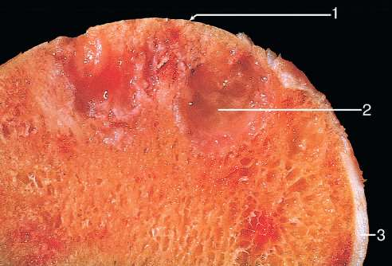
Reveal diagnosis and key features
Osteoarthritis: gross joint
1: exposed polished subchondral bone (eburnation). 2: subchondral cyst. 3: residual articular cartilage.
Slide annotations: Eburnation results when cartilage loss leaves opposing bony surfaces to rub; it is not a layer of normal cartilage.
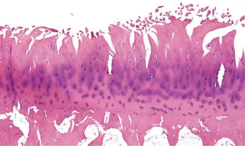
Reveal diagnosis and key features
Osteoarthritis: cartilage histology
Surface fibrillation and clefts in articular cartilage.
Slide annotations: The handwritten label points to fissuring. Early superficial fraying can progress into deeper fissures and eventual cartilage loss.
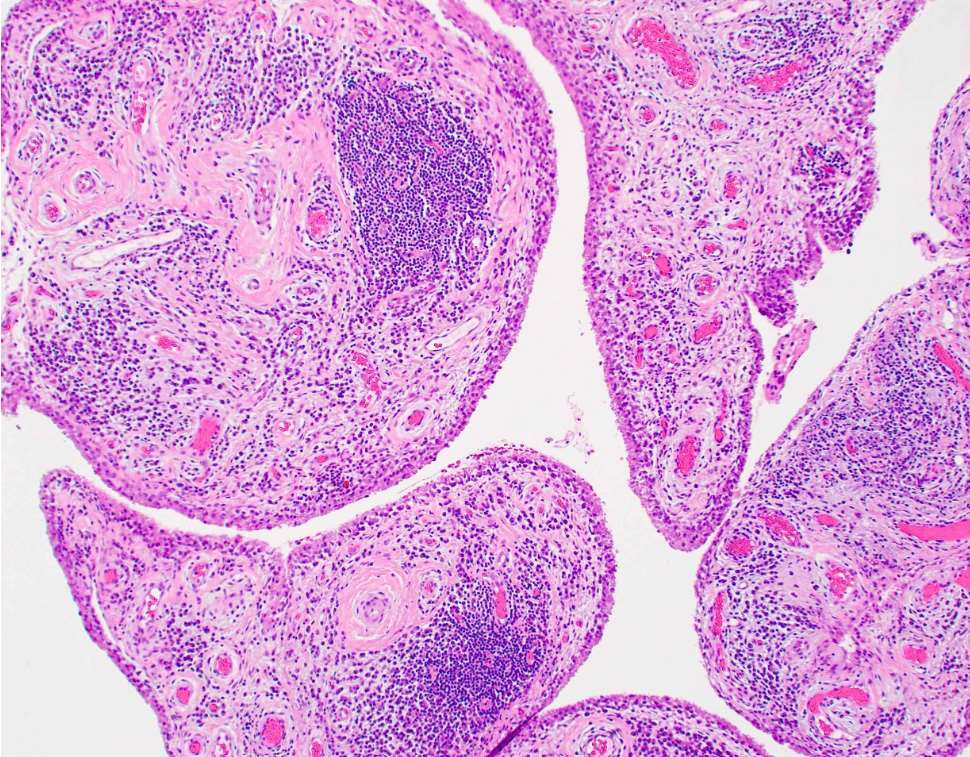
Reveal diagnosis and key features
Rheumatoid arthritis: low power
Chronic synovitis with villous expansion and a circled lymphoid aggregate.
Slide annotations: The handwriting labels rheumatoid arthritis (RA), lymphoid aggregates and chronic inflammatory cells. This is inflamed synovium, not the cartilage surface fraying seen in osteoarthritis.
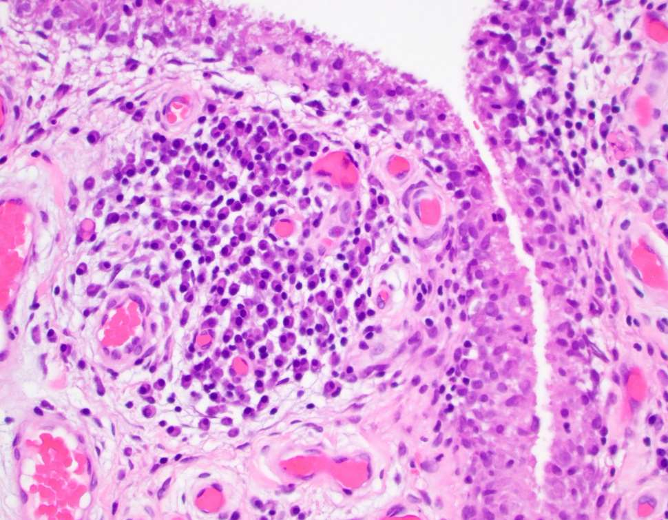
Reveal diagnosis and key features
Rheumatoid arthritis: high power
Thickened synovial lining with dense underlying inflammation.
Slide annotations: The labels identify synoviocytes at the surface and plasma cells below. Lining hyperplasia and chronic inflammation support rheumatoid synovitis; correlation is needed because chronic synovitis is not disease-specific.
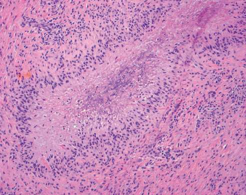
Reveal diagnosis and key features
Rheumatoid nodule
Central fibrinoid necrosis surrounded by palisading histiocytes.
Slide annotations: The marked outline draws attention to the central zone. Recognize the organized rim around necrosis rather than calling it a crystal deposit.
Crystal arthritis
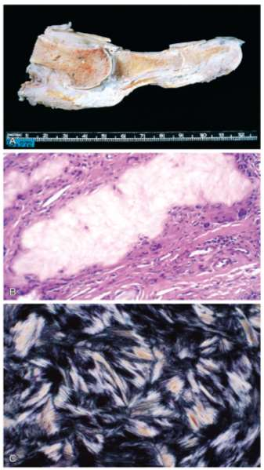
Reveal diagnosis and key features
Gout: three views of a tophus
A: chalky white tophi in a great toe. B: light microscopy, pale deposit rimmed by fibroblasts, chronic inflammatory cells and giant cells. C: polarized microscopy of needle-shaped urate crystals.
Slide annotations: The notes label this metabolic/crystal arthritis and distinguish light from polarized microscopy. Urate can dissolve in routine aqueous processing. Under compensated polarized light, monosodium urate is yellow when its long axis is parallel to the compensator slow axis and blue when perpendicular.
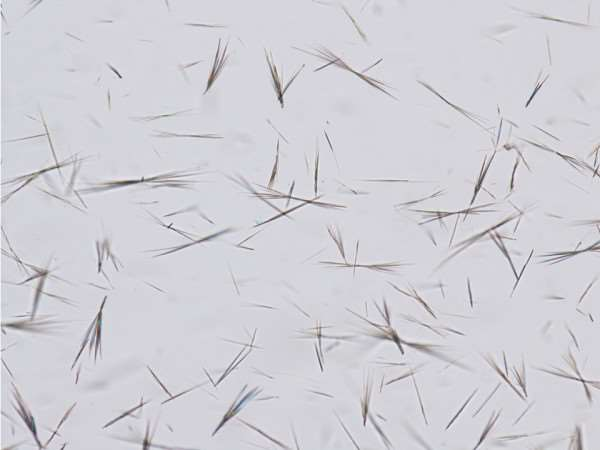
Reveal diagnosis and key features
Gout: needle-shaped crystals
Long slender needles in the field; these represent monosodium urate in the labelled specimen.
Slide annotations: Needle shape favours gout, but the birefringence sign requires compensated polarized light and orientation.
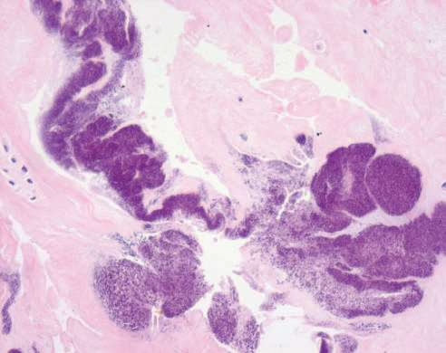
Reveal diagnosis and key features
Calcium pyrophosphate deposition: cartilage
Panel A: basophilic deposits in cartilage, consistent with calcium pyrophosphate deposition.
Slide annotations: The deposits may look amorphous on routine histology; do not expect the smear’s crystal outline to be equally clear in tissue.
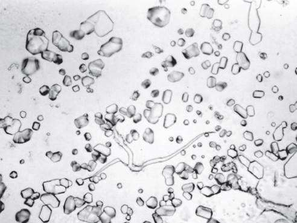
Reveal diagnosis and key features
Calcium pyrophosphate deposition: smear
Panel B: rhomboid or short rod-shaped calcium pyrophosphate (CPP) crystals.
Slide annotations: The note labels rhomboid shape and blue colour with positive birefringence. With a compensator, CPP is typically weakly positive: blue when parallel to the slow axis, yellow when perpendicular. Some crystals show little detectable birefringence.
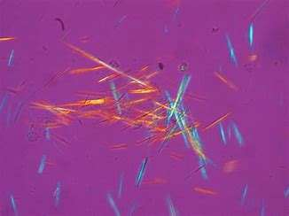
Reveal diagnosis and key features
Gout: polarized comparison
The left comparison image shows long needle-shaped crystals with orientation-dependent colour.
Slide annotations: Shape plus negative birefringence distinguishes monosodium urate. Yellow alone, without orientation, does not prove gout.
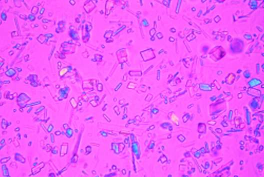
Reveal diagnosis and key features
Pseudogout: polarized comparison
The right comparison image shows short, angular or rhomboid forms.
Slide annotations: Pseudogout is acute CPP crystal arthritis. Compare the short outlines with the longer needles in the companion field; use the compensator to confirm the sign.
Osteonecrosis
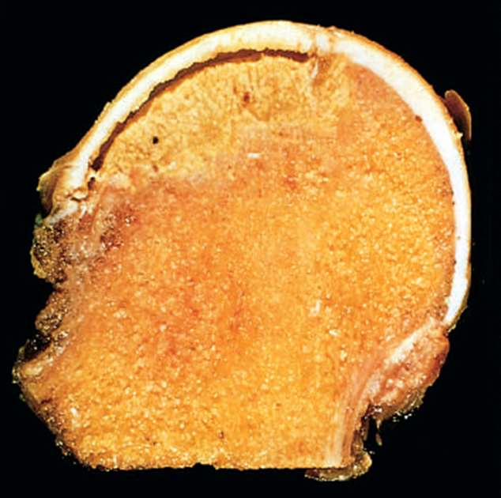
Reveal diagnosis and key features
Osteonecrosis: femoral head
A pale yellow, wedge-shaped subchondral infarct below the articular surface.
Slide annotations: The arrows identify subchondral necrosis and loss of epiphyseal blood supply. Bone and marrow infarct while cartilage can initially survive on synovial fluid; the cortex is often spared by collateral flow. Causes on the slide: trauma or vasculitis, corticosteroids, sickle cell disease and radiation. The slide notes that some cases are idiopathic (roughly one quarter in its cited context).
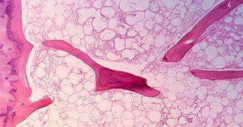
Reveal diagnosis and key features
Osteonecrosis: histology
1: empty osteocyte lacunae. 2: marrow cellular debris. 3: necrotic adipocytes.
Slide annotations: The handwritten numbers correspond to dead bone and marrow. Interpret empty lacunae with the surrounding marrow changes, since isolated empty lacunae alone can be artefactual.
Quick review: what to spot first
| Station | Best visual discriminator |
|---|---|
| Myopathy vs denervation | Necrosis and basophilic regeneration vs grouped angular atrophy and loss of the checkerboard. |
| Polymyositis vs dermatomyositis | Endomysial cytotoxic inflammation vs perifascicular atrophy, perivascular inflammation and characteristic skin signs. |
| Osteoporosis vs Paget disease | Too little normally mineralized bone vs irregular mosaic cement lines. |
| Osteoarthritis vs rheumatoid arthritis | Cartilage fibrillation and eburnation vs chronic synovitis and palisading nodules. |
| Gout vs pseudogout | Needle / negative / yellow parallel vs rhomboid / weak positive / blue parallel. Colour flips with rotation. |
| Osteonecrosis | Subchondral wedge grossly; empty lacunae with marrow necrosis microscopically. |
Practical quiz · 29 questions
Open the original figure to inspect it without the slide’s handwritten overlay.
Source: Musculoskeletal System Pathology Lab 1, Shifaa’ Al Qa’qa’, Al-Balqa Applied University. Crystal interpretation: review of synovial fluid crystal microscopy.